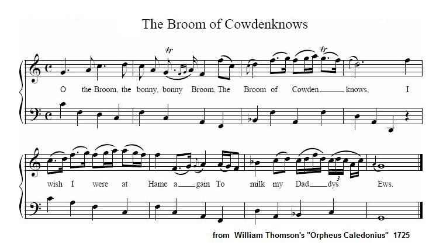
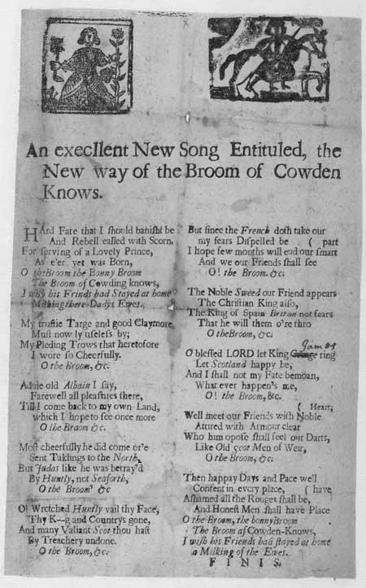

New Way of the Broom Of Cowdenknows
Nouvelle manière de chanter les 'Genêts de Cowdenknows'
A Broaside Ballad on the 1715 Risings, published ca 1716
followed by a variant, "O my King", from Hogg's "Jacobite Relics"
Tune - Mélodie
"The Broom of Cowdenknows"
from Wiliam Thomson's "Orpheus Caledonius", 1725,
and the "Scots Musical Museum" Volume I, song 69, pages 70 and 71, 1788
Variant
"O my King"
from Hogg's "Jacobite Relics" 2nd Series N°6, 1821
Sequenced by Christian Souchon

|
To the lyrics:
The "old way" of the "Broom of Cowdenknows" was quite different: (verse 1): How blythe, ilk morn, was I to see My swain come o'er the hill! He skipt the burn and flew to me, I met him wi' good will. Chorus: O the broom, the bonny, bonny broom, The broom of the Cowdenknows! I wish I were wi' my dear swain Wi' his pipe and my ewes! Source: D. Herd's "Ancient and Modern Scottish Songs...", 1769(?) , 1776, which has a second song to the same tune, beginning with "When summer comes, the swains on Tweed...". The first version is also to be found in Johnson's "Scots Musical Museum", Song N°69 (volume I, 1788). |
A propos du texte:
L'"ancienne manière de chanter" le "Genêt des Cowdenknows" était très différente: (1er couplet): O chaque matin, c'est avec joie Que je vois mon tendre ami paraître Franchissant le ruisseau, il s'élance vers moi, Et le bonheur emplit mon être. Refrain: O genêt, joli, joli genêt, Joli genêt des Cowden Knows! Comme je voudrais être auprès de mon aimé De sa musette et mes troupeaux! Source: D. Herd: "Chants écossais anciens et modernes...", 1769(?), 1776, où l'on trouve un 2ème chant sur le même air, qui commence par "Quand vient l'été, les bergers de la Tweed,...". La 1ère version figure également au "Musée Musical Ecossais" de Johnson (volume I, 1788) |

|
AN excellent New Song Entituled
the New way of the Broom of Cowden Knows 1. Hard Fate that I should banisht be [1] And Rebell called with Scorn, For serving of a Lovely Prince, [2] As e'er yet was Born, O the Broom the Bonny Broom The Broom of Cowding knows, I wish his Frinds had Stayed at home Milking there Dadys Ewes 2. My trustie Targe and good Claymore Must now ly useless by; My Pleding Trows that heretofore I wore so Cheerfully. O the Broom ,&c. 3. Aduie old Albain I say, [3] Farewell all pleasures there, Till I come back to my own Land. which I hope to see once more O the Broom &c. 4. Most cheerfully he did come or'e Sent Taklings to the North, [4] But Judas like he was betray'd By Huntly [5], not Seaforth [6], O the Broom' &c 5. O' Wretched Huntly vail thy Face, Thy K--g [7] and Countrys gone, And many Valiant Scot thou hast By Treachery undone. O the Broom,&c. 6. But since the French doth take our part my fears Dispelled be I hope few months will end our smart And we our Friends shall see O! the Broom,&c. 7. The Noble Sweed our Friend appears [8] The Christian King [9] also, The King of Spain Britan not fears That he will them o're thro O theBroom, &c. 8. O blessed LORD let King James/George [7] ring Let Scotland happy be, And I shall not my Fate bemoan, What ever happen's me, O! the Broom, &c. 9. Well meet our Friends with Noble heart Attired with Armour clear Who him opose shall feel our Darts, Like Old Scot Men of Weir, O the Broom, &c. 10. Then happay days and Pace we'll have Content in every place, Ashamed all the Rouges shall be, And Honest Men shall have Place O the Broom, the Bonny Broom The Broom of Cowden-Knows, I wish his Friends had stayed at home a Milking of the Ewes. F I N I S. |
Song N°6 from "Jacobite Relics", Volume II, page 20, 1821
1. Hard fate that I should banish'd be And rebell call'd with scorn, For serving of the kindest prince, That ever yet was born. O my king, God save my king, Whatever me befall! I would not be in Huntly's case For's honours, lands and all. 2. My target and my good claymore Must now lie useless by; My plaid and trews I heretofore Did wear most cheerfully. O my king ,&c. 6. Farewell old Albion I must take A long and last adieu; Or bring me back my king again, Or farewell hope and you. O my king ,&c. 3. So cheerfully our king came o'er Sent Ecklin to the north, But treach'rously he was betray'd By Huntly and Seaforth. O my king ,&c. 5. O' wretched Huntly, hide thy head, Thy king and country's gone, And many a valiant Scot hast thou By villany undone. O my king ,&c. 7. Set our true king upon the throne Of his ancestors dear, And send the German cuckold home, To starve with his small gear. O my king ,&c. 8. Then happy days in peace we'll see And joy in every face, Confounded all the Whigs shall be, And honest men in place. 4. O the broom, the bonny bonny broom The broom of the Cowdenknowes! I wish these lords had staid at hame, And milked their minnie [=mother]'s ewes. O my king ,&c. |
Une excellente nouvelle chanson
Intitulée "le nouveau genêt de Cowdenknows" 1. Quel sort cruel qu'être banni [1] Et traité de rebelle, Comme ceux qui à ce gentil, Prince [2] furent fidèles, O Genêt, joli genêt, Genêt de Cowdenknows, Que ne sommes-nous donc restés A paître nos troupeaux? 2. Mon bouclier et mon claymore Ne servent plus à rien; Ni le plaid où hier encore Je me sentais si bien. O Genêt etc. 3. Je te dis adieu, vieille Alba, [3] Séjour de mon enfance, Revenir un jour sur mes pas. Est ma seule espérance! O Genêt etc. 4. Plein d'enthousiasme, il débarqua Recrutant vers le nord [4] Mais fut trahi par un Judas: Huntly [5], non point Seaforth [6]. O Genêt etc. 5. O vil Huntly, tu as vendu, Ton R-- [7] et ta patrie, Plus d'un vaillant Scot fut perdu Par ton ignominie. O Genêt etc. 6. Mais, forts du soutien des Français Nous n'avons, je l'espère, Que quelques mois à patienter Avant qu'ils nous libèrent. O Genêt etc. 7. Le fier Suédois est notre ami, [8] Le Roi Chrétien de même, [9] De l'Anglais l'Espagne se rit; Et brisera nos chaînes O Genêt etc. 8. DIEU garde Jacques (Georges), notre roi [7] Et protège l'Ecosse. Mon propre sort n'importe pas, Ni mes plaies, ni mes bosses. O Genêt etc. 9. Vivent nos généreux alliés! Qui reprennent les armes. Aux autres, décochons nos traits, Selon l'antique usage, O Genêt etc. 10. L'ordre et la paix pourront régner Sur nos champs, nos pâtures, Et les gredins devront céder La place à la droiture. O Genêt, joli genêt, Genêt de Cowdenknows, Que ne sommes-nous donc restés A paître nos troupeaux? F I N I S. (Trad. Ch.Souchon(c)2006) |
|
[1]
That I should banished be
: The narrator of this ballad appears to be someone who has been exiled for supporting a Jacobite rising.
[2] Lovely Prince : The ballad refers, evidently, to the 1715 rising in support of James Stewart, 'The Old Pretender'. [3] Alba : Gaelic for "Scotland" [4] He did come over : The Old Pretender landed at Peterhead in November 1715. "Taklings"=tacksmen, recruiting agents (see "clans") The "Ecklin" in Hogg's version is unknown. [5] Huntly : Alexander Gordon (1678-1728), Marquis of Huntly , son of the Duke of Gordon, known as "the Cock of the North" , fled after the Battle of Sherrifmuir and defected to the Hanoverians. [6] Seaforth : William Mackenzie, 5th Earl of Seaforth joined the Jacobites at Braemar and took part with 3000 of his men in the battle of Sherrifmuir. He also was instrumental in a Jacobite enterprise in 1716 and he was wounded at Glenshiel in 1719. [7] K--g : Despite the ballad's Jacobite sympathies, verse five mentions the king in a cryptic way, and verse eight praises the Hanoverian King George, probably to prevent the printer being accused of treason. However, a later hand has changed 'George' to 'James'. [8] The noble Swede : see the song Here's a Health to the valiant Swede . [9] The Very Christian King : the King of France, Louis XV (aged 6 years in 1716). |
 Broadside from the National Library of Scotland Collection Probable date of publication : 1716 Like for the previous song, one of the two woodcuts on the sheet represents a kilted Scot riding woman-fashion, and playing the Scotch fiddle, i.e. scratching himself. Comme pour le chant précédent l'une des 2 gravures représente un Gaël en kilt montant un cheval en amazone et 'jouant du violon écossais', c'est à dire "se grattant". |
[1]
Etre banni
: le narrateur de cette ballade est en exil en raison de son soutien à un soulèvement Jacobite.
[2] Gentil Prince : La ballade a trait, c'est évident, au soulèvement de 1715 en faveur de Jacques Stuart, le 'Vieux Prétendant'. [3] Alba : gaélique pour "Ecosse". [4] Il débarqua : Le Vieux Prétendant débarqua à Peterhead en novembre 1715. Le texte original utilise le mot "Takling"qui correspond peut-être à "Tacksman" (voir "Clans" ) L'"Ecklin" de la version de Hogg est un inconnu. [5] Huntly : Alexander Gordon (1678-1728), Marquis de Huntly , fils du Duc de Gordon, connu comme le "Coq du Nord", s'enfuit après Sherrifmuir et prit le parti des Hanovriens. [6] Seaforth : William McKenzie, 5ème Comte de Seaforth s'engagea avec les Jacobites à Braemar, prit part à la bataille de Sherrifmuir avec 3000 de ses hommes. Il participa aussi à un coup de main Jacobite en 1716 et fut blessé à Glenshiel en 1819. [7] R-- : Bien que la ballade témoigne de sympathies Jacobites, au couplet 5, le mot "roi" est écrit de manière allusive et au couplet 8 c'est le nom du roi Hanovrien"George" qui est imprimé, sans doute pour éviter à l'éditeur d'être poursuivi pour trahison. Cependant le nom fut remplacé par la mention manuscrite "James" (Jacques). [8] Le noble Suédois : cf.le chant A la santé du roi de Suède . [9] Le Roi (très) Chrétien : le roi de France, Louis XV (alors âgé de 6 ans!) |
|
|
||
|
After Sherrifmuir, Mar retired to Perth, where his army began to melt away.
James, the "Old Chevalier". landed in Scotland on the 22nd of December, 1715 and reached Perth on the 6th of January, 1716. Preparations were made for his coronation at the historic burgh of Scone, on the 23rd of January but the Stuart King was already seriously thinking of retiring from the advance of his enemies. The Duke of Argyle who was lying at Stirling Castle with the royal army, commenced his march upon Perth. At midnight on the 30th of January the insurgent army commenced to retreat, crossed the Tay on the ice and marched to Dundee, and thence by Arbroath to Montrose. There, on the 3rd of February, the Pretender and the Earl of Mar went aboard a small ship and sailed for France. This caused much indignation in the army, and many left for their homes. General Gordon ( "Sandie Don" ) was left in command, and marched the fast diminishing army northward. On reaching Aberdeen, on the 7th of February, the remainder of the army dispersed. But a large number of those who joined the rising never returned to their homes, being either slain or taken prisoners. But the English Government took measures for the punishment of the prisoners and those implicated in the rising. Many of the prisoners were executed at Carlisle and other places, and hundreds were sent to the plantations. Several persons of rank made their escape from prison. The estates of over 40 families in Scotland were forfeited to the Crown. |
Après Sherrifmuir, Mar se retira avec son armée à Perth, où celle-ci commença à se dissoudre.
Jacques, le "Vieux Chevalier", débarqua en Ecosse le 22 décembre 1715 et atteint Perth le 6 janvier 1716. On fit des préparatifs pour son couronnement dans le bourg historique de Scone, le 23 janvier, mais le roi Stuart King commençait sérieusement à penser à s'en aller pour échapper à ses ennemis. Le Duc d'Argyll qui s'était établi au Château de Stirling avec l'armée royale, se mit en marche en direction de Perth. A minuit le 30 Janvier l'armée des insurgés commença à battre en retraite, traversa la Tay sur la glace et se dirigea vers Dundee, et, de là, par Arbroath vers Montrose. C'est là que, le 3 février, le Prétendant et le Comte de Mar s'embarquèrent sur un petit bateau et firent voile vers la France. Cet abandon souleva l'indignation de l'armée et beaucoup d'insurgés rentrèrent chez eux. Le Général Gordon ( "Sandie Don" ) demeuré à son poste conduisit l'armée dont les effectifs ne cessaient de diminuer ver le nord. En arrivant à Aberdeen, le 7 février, le reste de l'armée se dispersa. Mais un grand nombre de ceux qui étaient impliqués dans cette rébellion ne devaient jamais rentrer chez eux, soit parce qu'ils étaient tombés sur le champ de bataille, soit parce qu'ils étaient prisonniers. C'est alors que le pouvoir entrepris de punir les prisonniers et les sympathisants du soulèvement. Un grand nombre de prisonniers furent exécutés à Carlisle et en d'autres endroits et des centaines d'autres déportés dans les colonies comme esclaves. Plusieurs nobles réussirent à s'évader de prison. Les terres de plus de 40 familles d'Ecosse furent confisquées au profit de la Couronne. |
|